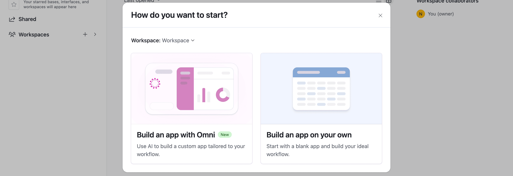
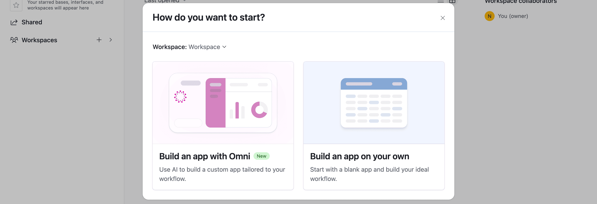
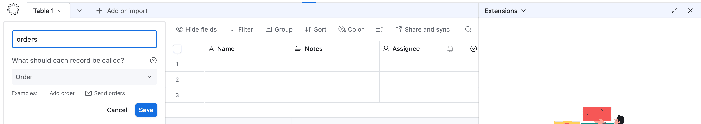
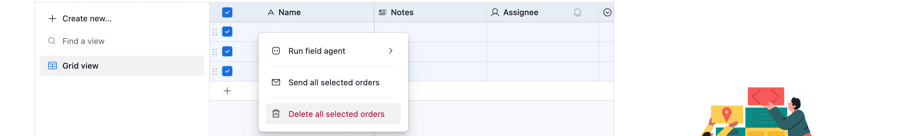

Materi 6: Memasukkan Data ke Airtable
Di langkah ini, Kita akan belajar cara mengambil data yang Kita terima dari node HTTP Request dan memasukkannya ke Airtable menggunakan node Airtable.
Tentu saja, Kita bisa mengganti node Airtable dengan aplikasi spreadsheet lain. n8n juga memiliki node yang sangat bagus untuk Google Sheets. Konsepnya akan sangat mirip.
Setelah langkah ini, alur kerja Kita akan terlihat seperti ini:

Alur kerja Kita sekarang memiliki langkah "Ambil Data" dan "Simpan Data".
Langkah 1: Menyiapkan Tabel "Tujuan" di Airtable
Sebelum kita bisa mengirim data ke Airtable, kita perlu menyiapkan "wadah" atau "tabel" untuk menerimanya. Ini adalah langkah yang sangat penting.
1.1: Buat Akun & Base Baru
Jika Kita belum punya, buat akun gratis di situs web Airtable.
Tampilan homepage Airtable.
Setelah klik Sign up for free, saya memilih untuk masuk dengan akun Google saya.
Tampilan login, saya memilih Google SSO untuk kemudahan.
Setelah masuk ke workspace Kita, tambahkan "Base" baru dari awal (from scratch).

 

Membuat 'Base' baru di dalam workspace Airtable Kita.
Beri nama Base tersebut, misalnya, "beginner course".
Memberi nama Base Kita agar mudah diidentifikasi.
1.2: Siapkan Tabel
Secara default, Airtable membuat tabel bernama "Table 1" dengan beberapa kolom (fields) bawaan seperti "Name", "Notes", "Assignee", dan "Status". Kolom-kolom ini tidak relevan dengan data penjualan kita.
Kita perlu menyiapkan tabel ini agar persis cocok dengan data dari n8n:
-
Ganti nama tabel dari "Table 1" menjadi "orders".

Tabel 'orders' Kita setelah dibersihkan dari kolom dan data default.
-
Hapus 3 record kosong yang dibuat secara default.

Tabel 'orders' Kita setelah dibersihkan dari kolom dan data default.
- Hapus kolom-kolom default: "Notes", "Assignee", dan "Status".
Tabel 'orders' Kita setelah dibersihkan dari kolom dan data default.
1.3: Buat Kolom (Fields) Baru
Ini adalah bagian terpenting. Nama-nama kolom di Airtable harus sesuai dengan nama kolom dari data kita. Data kita memiliki 5 kolom (orderID, customerID, employeeName, orderPrice, orderStatus).
-
Edit kolom "Name" (kolom utama): ganti namanya menjadi
orderIDdan ubah tipe field-nya menjadiNumber. -
Tambahkan field baru: Nama
customerID, TipeNumber. -
Tambahkan field baru: Nama
employeeName, TipeSingle line text. -
Tambahkan field baru: Nama
orderPrice, TipeNumber(Kita juga bisa mengubah formatnya menjadi 'Currency' di Airtable). -
Tambahkan field baru: Nama
orderStatus, TipeSingle line text.

Kolom 'orderID' (Tipe: Number) sebagai Primary Field.
Sekarang, tabel Kita di Airtable sudah siap 100%. Tampilannya akan terlihat seperti ini:

Tabel 'orders' Kita sudah siap menerima data dari n8n.
Langkah 2: Menambahkan Node Airtable di n8n
Oke, "wadah" kita sudah siap. Mari kembali ke alur kerja Kita di n8n.
Klik ikon + di sebelah kanan node HTTP Request.
Di panel node:
- Cari Airtable.
- Di bawah "Record Actions", pilih Create a record.

Kita memilih aksi 'Create' karena kita ingin membuat record baru.
Kita memilih aksi 'Create' karena kita ingin membuat record baru.
Node Airtable akan ditambahkan ke kanvas dan jendela konfigurasinya akan terbuka.
Langkah 3: Mengonfigurasi Node Airtable
Di jendela node Airtable, kita perlu mengonfigurasi beberapa parameter:
- Credential to connect with: Pilih Create new credential.
- Biarkan opsi default Connect using: Access Token terpilih.
Untuk mendapatkan Access Token, Kita perlu membuatnya di dalam akun Airtable Kita. Berikut adalah langkah-langkah visualnya:
- Di Airtable, navigasi ke Builder Hub (atau Akun > Developer hub) dan pilih Personal access tokens.
- Klik "Create token".

Halaman awal untuk membuat personal access token Kita.
Selanjutnya, kita perlu mengonfigurasi Token tersebut:
-
Name: Beri nama yang deskriptif, misal
n8n-belajar. -
Scopes: Ini adalah izin. Kita perlu menambahkan
(
+ Add a scope) setidaknya:data.records:readdata.records:writeschema.bases:read
- Access: Pilih 'Base' mana yang boleh diakses oleh token ini. Kita pilih "beginner course".

Mengisi Nama, Scopes (izin), dan Access (database) untuk token Kita.
Terakhir, klik "Create token". Airtable akan menampilkan token Anda satu kali saja.
Token Kita sudah jadi! Salin (copy) kode rahasia ini.
Sekarang, kembali ke n8n dan klik + Create new credential lagi (jika tertutup) atau isi popup yang sudah ada:

Tempelkan token yang baru Kita salin dari Airtable ke bidang 'Access Token' di n8n.
Setelah kredensial Kita disimpan, kembali ke jendela node Airtable dan isi sisanya:
-
Resource: Pastikan
Recordterpilih. -
Operation: Pastikan
Createterpilih. - Base: Klik di sini dan pilih 'Base' Kita dari daftar (contoh: beginner course).
- Table: Pilih tabel Kita dari daftar (orders).

Memilih Base dan Table yang sudah Kita siapkan.
-
Mapping Column Mode: Pilih
Map automatically.
Ini adalah fitur yang sangat hebat. Karena kita sudah bersusah payah membuat nama kolom di Airtable (
orderID)
sama persis dengan nama kolom di data n8n kita
(orderID), n8n bisa secara otomatis memetakannya. Kita
tidak perlu menghubungkannya satu per satu.
Tampilan output node Airtable di n8n setelah fitur Map automatically digunakan
Langkah 4: Menguji Node Airtable
Setelah selesai konfigurasi, klik Execute step. Ini mungkin butuh beberapa saat karena n8n harus mengirim 30 item (record) ke Airtable satu per satu.
Hasil di n8n akan terlihat seperti ini, menunjukkan bahwa 30 data telah berhasil dibuat:

Hasil eksekusi di n8n menunjukkan 30 record berhasil dibuat.
Sekarang, buka kembali tab Airtable Anda... dan lihat keajaibannya! Semua 30 data dari node HTTP Request sekarang akan muncul di tabel "orders" Kita.

Data Kita telah berhasil diimpor ke Airtable!
Langkah Selanjutnya
Kita sudah berhasil mengambil data dan menyimpannya. Tapi, Kita belum selesai...
Nathan 🙋:Wow, ini sudah sangat berguna! Tapi ini memasukkan semua data yang dikumpulkan dari node HTTP Request ke Airtable. Ingat, saya sebenarnya hanya perlu memasukkan pesanan yang statusnya "Processing" ke tabel, dan menghitung total harga dari pesanan "Booked"?
Kita 🤵🏻:Tentu, tidak masalah. Kita baru saja membuat 'pipa' datanya. Sebagai langkah selanjutnya, saya akan menggunakan node baru untuk memfilter pesanan berdasarkan statusnya.